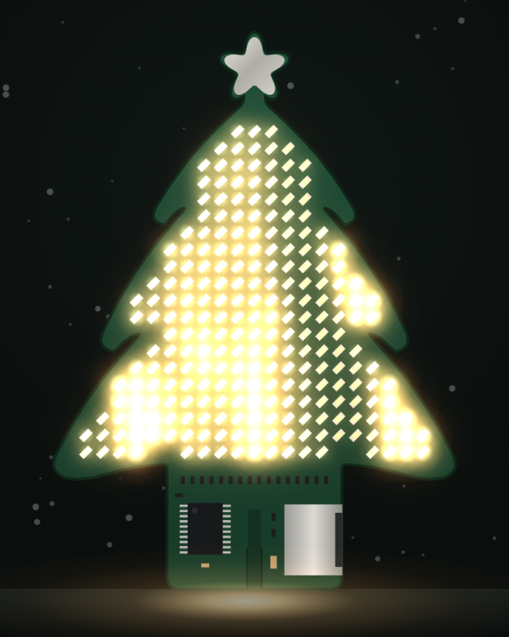
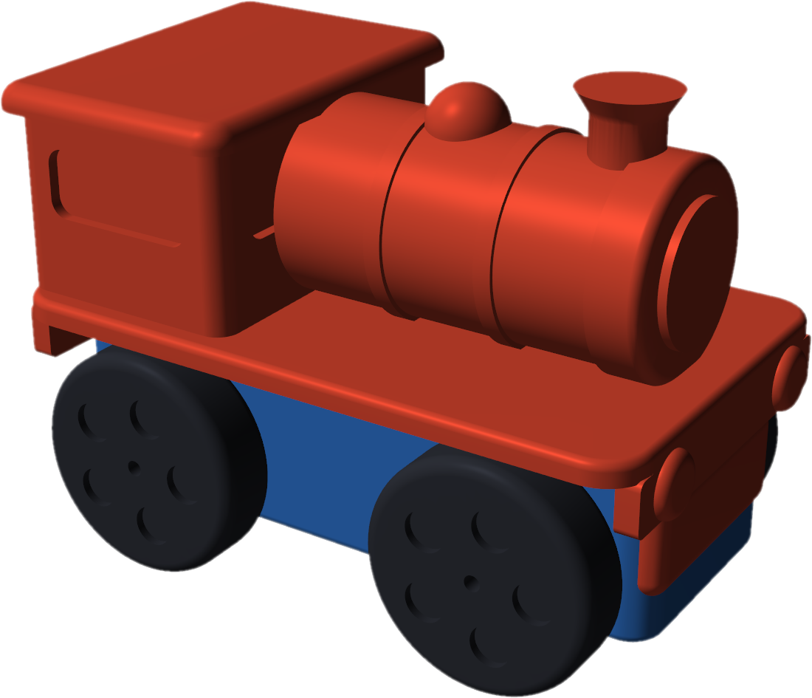

Headings build letter by letter, boxes flip in like cards. Came in with dissolve.
Pick an effect per element
This box uses data-fx="spin3d".
The iris opened from the first picture on the slide.
Tables slide in row by row
Batch
100 pcs
1 000 pcs
10 000 pcs
Parts and assembly
3,83 €
3,20 €
1,98 €
Certification share
27,00 €
2,70 €
0,27 €
Right-aligned number cells count up. Came in with blinds.
Effects for pictures and boxes
power
scan
radial
spin3d
Also: pop, flip, rise, letters, rows, list, tilt, fade, count. Came in with zoom.

Video clips
An image with data-video becomes a muted loop that plays only while its slide is shown.
Came in with cube-x.
Every slide picks its entrance
cube-y
cube-x
iris
blinds
dissolve
zoom
vortex
fade
The neutral core's transitions: data-enter="name" on the section; going back plays it in reverse. Themes add more, shown at the end of this deck. Came in with vortex.
Themes add more, and mix
The core is neutral, like this part
A theme adds transitions, effects, backgrounds
Link any number of themes in one deck
Each theme has a section at the end. All themes: themes/README.md. Came in with iris.
The slide shrinks into a grid. Keep scrolling, then press →.
N
Shows the speaker notes of this slide.
T
The timer in the bottom right started with your first →.
Came in with dissolve.
Made for Claude to write
You give Claude the material and the talk length
Claude writes the slides, notes and a theme
build.py packs everything into one HTML file
Came in with blinds.
One file, any PC
python build.py deck.html -o talk.html
Came in with zoom. Next: the themes, one section each.
Theme: pixelpine
The LED tree
LED-matrix wipes and a twinkling LED background, from the PixelPine Christmas tree talk.
Came in with led-radial, data-ambient="leds" behind it.
led-rain
LEDs light up falling like rain, cover the screen, then switch off.
Came in with led-rain (pixelpine).
led-spiral
The same LEDs, sweeping in a spiral from the centre.
Came in with led-spiral (pixelpine).
led-diagonal
And across the diagonal. A real talk with this theme: demo/PixelPine-demo.
Came in with led-diagonal (pixelpine).
Theme: train
Steam trains
A toy steam train: slides leave as wagons, steam, a tunnel, level crossings, cards on wheels.
Came in with train: the old slide left as a wagon, this one arrived behind the loco. data-ambient="trains" behind it.
Cards on wheels
240 g
Cards roll in on wheels: data-fx="wagon"
0,11 $
Numbers come out of steam: data-fx="puff"
9,3 µA
The heading is towed in: data-fx="tow"
Came in with steam (train): a cloud rolls over the screen from below and clears upwards.
Through a tunnel
The view rides into a tunnel mouth, past the lamps inside, and out through the exit onto the new slide.
Came in with tunnel (train).
Level crossing
Six barriers swing down with blinking lamps, the slide changes behind them, and they lift again.
Came in with barrier (train).

Slides as wagons
The view zooms out, the train moves on by one wagon, and zooms in again.
Came in with track (train). The loco uses data-fx="depart": it drives off and backs in every 14 s. data-dots="track" on the body turns the dots into a rail. A real talk with this theme: demo/Nudgy-demo.